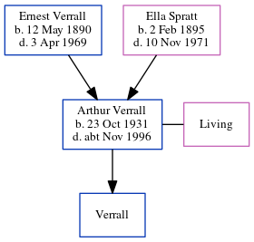

Arthur George Verrall 1931 - c1996
[ Home ] | [ Calendar ] | [ Surnames Index ] | [ Census Index ] | [ Family History ]The youngest of 5 children of Ernest Verrall (a window cleaner) and Ella Spratt (a charwork), Arthur Verrall, the first cousin once-removed on the father's side of Nigel Horne, was born in Thanet, Kent, England on Oct 23, 19311,2 and married Jean G V Baldwin (with whom he had 1 child, whose first name is unknown) in Thanet around Nov 19513. On Sep 29, 1939, he was living at 74 Invicta Road, Margate, Kent, England4.
He died c. Nov 1996 in Thanet2.
Parents
- Ernest Charles was born on May 12, 1890
- Ella was born on Feb 2, 1895
Citations
- England & Wales births 1837-2006 - Findmypast
- England & Wales deaths 1837-2007 - Findmypast
- England & Wales Marriages 1837-2005 - Findmypast
- From his mother's address on that day
Media
England & Wales births 1837-2006 - BMD/B/1931/4/AZ/001168/082
England & Wales deaths 1837-2007 - BMD/D/1996/11/81681983
England & Wales Marriages 1837-2005 - BMD/M/1951/4/AZ/001246/117
Family Tree
Generated by ged2site. Last updated on Jun 11, 2024